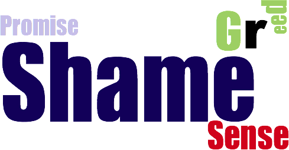

INTRODUCTION
For this essay I will discuss my chosen designer, Neville Brody and summarise the topics, styles, genres, artists and designers that influenced his work. I will show how I have then used this designer to influence my own portfolio.
Choosing one designer from the list provided was extremely hard. I completed research on each of the designers and felt a particular connection with two; Neville Brody and Jessica Hitche.

I admire Jessica Hitche's work and enjoyed looking at her typography skills and tattoo designs.The image above highlights the intense details she puts into letters, each one an individual piece of art work.
I continued my research with the designer Neville Brody. Brody’s work stood out for three reasons; his personality, his link to my own work and his eccentric mood on his works of art. For this assignment I hope to capture each of these areas to show what inspired me.
THE MAN HIMSELF
"I have always been very interested in how advertising and design can manipulate the way that people think and in the early years I wanted to learn those tools in order to turn them around, to reveal the truth rather than conceal it."
Brody is perhaps known to be the best graphic designer of his generation. His work in the 1980’s revolutionised the look of magazines, advertisements, album covers and packaging. He is most well known for his ground-breaking design and typography for the magazine ‘The Face'
WHERE DID IT BEGIN?
" I don't remember a time in my life when I was going to be doing something else. Ever since I had any self awareness, I've wanted to do art or painting."
From an early age Brody was very sure of what he wanted to do in life. His studies reflected this starting with A level art and continuing on to do a foundation course in Fine Art at Hornsey Art College. During his time here he came to realise that;
"I wanted to understand the everyday images that where around me at that time, and the process of manipulation particularly with in commercial art. By understanding the mechanism at ground level, I hoped to produce the opposite effect by turning them on their head."
This influenced him to choose the route of graphic design rather than Fine Art. If he continued in this area his work would have found a limited audience. I feel this decision was what made him the designer he is today. If he had of stayed within Fine Art he wouldn't have the personality and be as eccentric within his work. Brody continued his studies and pursued a 3 year B.A course in Graphic design at the London College of Printing. This is were it all began!
TopWHAT INFLUENCED HIM?
Punk
"Punk was probably the most influential thing to happen to me"
In 1977 Brody was studying Graphics, Punk was starting to have an effect upon London's street life. As far as Brody was concerned this give him the jump start he needed and the confidence to experiment with punk through his own work.
He was particularly inspired by the band Wires Pink Flag. He listened to their lyrics;
"You should pursue an idea, do it, stop, then go on to the next one."
Brody embraced the punk era and started designing his own artwork. This rebellious artwork didn't go down well and he was close to expulsion at one stage for designing a postage stamp with the Queens head on it sideways. This was hugely frowned upon within the college.
Dadaism
In spite of the postage stamp, Brody was motivated and his first year thesis was based around a comparison between Dadaism and pop art.
Although it was said that in a certain sense, art died with dadaism, Brody though it was 'anti-art' and probably the most artistic of any intervention of its century.
Futurism
Futurism also influenced Brody's work and Boccioni in particular was an inspiration to him. His work is colourful and connects to the colour studies in Brody's own work.
Looking at Boccioni's work they used collage, cut-up newspapers, mad colour or found objects to create radical, chaotic images. Things you previously knew or understood were turned upside down and all rules were broken.This radical approach had an influence on Neville Brody.
Pop Art
Pop art was very close linked with punk but it was a very commercial art and was presented in a way that made anti-commerical art acceptable at this time.
Andy Warhol's Andy Warhol was the superstar of the Pop Art era and his Marilyn Monroe made him famous worldwide. Brody said 'his art was subversive for about fifteen minutes' as he blended unlike elements together and this is what made his Pop Art so successful and Brody took inspiration from this.
HIS WORK AND STYLE
Over the years Brody has achieved many accomplishments. In the design industry he is well known for being a pioneer, but also for being controversial. Some of his achievements are more well known than others. The timeline below shows some of what I think are his greatest achievments along the way
1978- Designed poster for students concerts, notably Pere Uba supported by the Human League
1980- Begins to design album cover sleeves for Fetish record label
1980-1986- Works as director of "The Face" magazine.
1987-1990- Works with "Arena" magazine
1994- He founded "Research Studios" in London. Now open also in Paris, Berlin and Barcelona. Has worked with clients such as; Kenzo, Nike for the England squad's football kit and Paramount Studios. This is only a few of his interesting clients.
2011- Re-design of the BBC
2006- The Times Newspaper, he creates new font Times Modern as it is the first new font at the newspaper since it introduced Times New Roman in 1932.
Sister company research Publishing set up FUSE, the renowned conference and quarterly forum for experimental typography and communications. There have been 3 Fuse conferences that bring together people from design, architecture, sound, film, interactive design and web.
When studying at the London College of Printing, Brody got his first taste of musical movement that was to have a heavy influence on his future work. Brody began to design posters for student concerts. One of his big breaks was for Pere Ubu supported by 80's band Human League
Everyone knows Brody for typography and with his heavy influence on music, I think this is what makes his work so fluid and exciting to look at. He thought to himself people initially look at magazines, rather than to to absorb the knowledge like a book which I agree with. I myself would buy a magazine to initially view rather than to read. Brody felt viewers would flick back and forth to the interesting bits that caught their attention. He decided to use this idea as a basis for his designs.
Taking this all into consideration Brody focused on the main content he wanted readers to see first. He highlighted the content by focusing on contrasting sizes, shapes or colours of type. This achieved his goal by grabbing the consumers attention.
The Face

This brings me to “The Face” magazine. Brody made his name largely popular through his designs for the “The Face” magazine. It was first published in 1980. Brody was the typographer, graphic designer and art director for the magazine.
His design methods and reasons behind them are discussed as follows. He arranged the typography in shapes such as circles. He made some letters extra large, some really small. This made the letters never look the same which was a style of Brodys personality.
Instead of page numbers he used symbols to separate the different topics. Brody used little logos to separate the article and this give it a house style. He also designed a new font uniquely for the magazine. It was simple with no serifs. It was modern as it had curved ends .
Brody decided that the typography should be emphasised as he believed it had an equal importance to the magazine. The style of lettering should be used to illustrate the article as well as the image to have the same impact. This was very unusual at this time and made Brody more unique.
As the years progressed Brody developed his typeface to include interesting details such as symbols, signs and more unusual punctuation marks. All of this attention to detail helped make ‘The Face ‘ the most fashionable and influential style magazine of the late 20th Century.
THE CRAZY FUSE FONTS
"Fuse has always been a battleground of experimentation and a laboratory of thought."
Fuse has always been edging continually between familiarity and abstraction. Brody's work with fuse is colourful and eye catching. It is questionable to even be typography.
The fuse project was set up by the Brody studio in October 1990. 'Fuse creates an outlet that allows type designers to challenge conventional thinking about the form and function of typography'
Fuse is known to push the boundaries and working outside the box as they say 'contributors are briefed to push the boundaries for both the printed word and its fusing into electronic language so that typography professional representation in graphic design is revolutionised.'
Fuse is the most interesting part of Brody's work in my opinion. Its the most free styled and I love how it pushes the boundaries of typography and gives me the impression of it being effortless. It becomes more like an art piece rather than a font.
These are a few of my favourite examples of Brody’s fonts:


Some are easier to decipher than others. I love the ones that are not easy to read, as they become more of a challenge to understand and this is what makes them so unique and interesting. Brody continues to break the visual boundaries and try to break new creative grounds.
HOW HE INFLUENCED ME
Brody's work has hugely inspired me. He has instilled confidence to go crazy, have no limits, don't hold back and feel the work I do.
His work all seems to be very bold and different, specialising in typography. I like this style as it makes it more visually pleasing and exciting.

Another piece of work which I tried myself was his brand Strategy he did for Nike designed in 1988 (above). I liked the way he positioned his type and the colours he used through out it.

The colours that Neville choose to work with all blend boldly together and this is another element of his work that has inspired me. Before my research I didn't see colour as a huge focus point I know now that colour is almost the most important element in your design.
CONCLUSION
In conclusion of this essay, I feel I have made the correct decision in choosing Neville Brody as my designer. I thoroughly enjoyed doing research on him and combining his life’s work together in my own style and way. I have learned a great deal about him and how his work has revolutionised the design industry in advertising, magazines and packaging. His style of work was and is still unique and inspired many other designers. I feel that Neville Brody still has a lot more innovation in design and typography in years to come. In an interview with designboom 2014 Neville stated "I’m a bit disappointed that digital is starting to become treated a lot like a utility now. for instance, twenty years ago when people first started thinking about the potential of the internet I would have expected much more innovation and experimentation by now. who knows maybe stuff will bubble-up and take a turn for the better again – like graphics has".This has had, and will have a great influence on my own work present and future.
Bibliography
http://www.designboom.com/design/interview-with-graphic-designer-neville-brody-10-10-2014/
http://en.wikipedia.org/wiki/Neville_Brody
http://www.eyemagazine.com/feature/article/reputations-neville-brody
Wozencroft Jon, The Graphic Language of Neville Brody, Italy, Thames and Hudson, 1988
Wozencroft Jon, The Graphic Language of Neville Brody, Singapore,Thames and Hudson, 1994